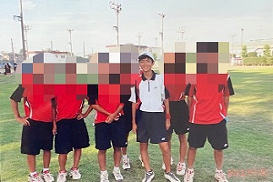
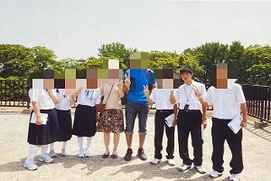

中学校
地元の中学校に入学する。


部活動は母や姉の影響でソフトテニス部に入部し、２年生からは部長を務めていた。
部長として、部員一人一人の特性を理解しつつ、チームのモチベーション管理や
練習メニューの立案などを行った。その結果、地区大会の団体戦・個人戦を勝ち上がり、
県大会でも上位に食い込む結果を残した。
また、個人としても群馬県選抜の最終選考に選出されたこともあった。
そして、現役最後の地区大会では、部長として部を牽引し、団体戦優勝、
個人戦でも１～４位を独占し、同部史上初の地区大会完全制覇を成し遂げた。中学校の部活動は、
自身を大きく成長させる貴重な経験となり、かけがえのない思い出となった。

クラスでは学級代表を務めることが多く、クラスの中心となって、合唱コンクールなど
学校行事やイベントに参加した。
学業面では、持ち前の集中力を生かして、勉強に取り組み、学年トップの成績を取り続けた。
そして、第一志望であった高校に入学を果たした。